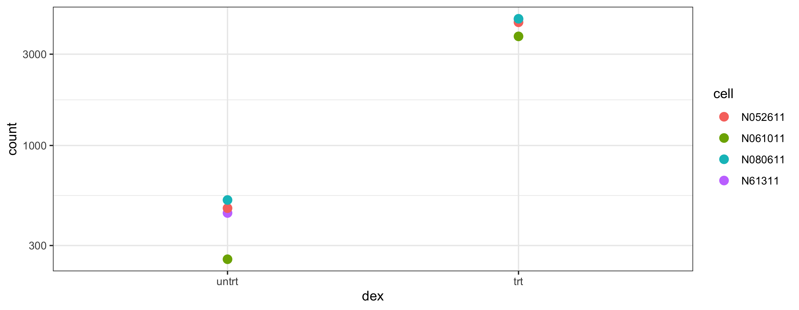
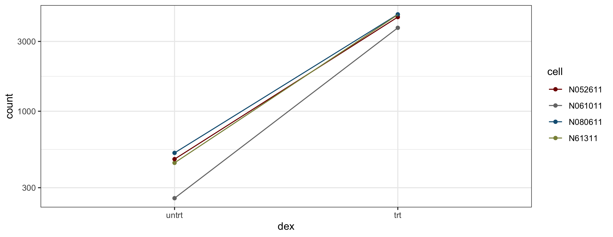

Análise dos Dados com R
Bioconductor – RNASeq
Retrovirologia, EPM, UNIFESP
2024-12-03
Nóticia Importante
Aula de 10 de dezembro (semana que vem) vai ser trocado para 8 de janeiro
Semana que vem Prof. Fernando Antonelli vai dar a 1ª aula dele
Introdução
Análise de dados da sequência de alto rendimento (“high-throughput sequence data”)
Investigar vários aspectos de genes e transcripts
Hoje, olhar na expressão diferencial dos genes
O processo vai definir um dos muitos fluxos de trabalho possíveis de análise bioinformática
Pacotes para Instalar para a Aula
- Instalação desses 2 pacotes vai causar instalação de vários outros necessários para funcionamento
Dados – Airway
Um experimento RNA-seq que tratou células musculares lisas das vias aéreas com dexametasona
4 linhas de células
- Cada linha tem uma amostra tratada e outra não-tratada
Dexametasona - glicocorticoide sintético esteroide com efeitos anti-inflamatórios
Utilizado no tratamento de doenças respiratórias entre outras coisas
Dados resumidos no pacote
airway
Carregar Pacotes
Os Pacotes Carregados
| Tximeta & Airway Related Packages | ||
|---|---|---|
| package | version | date |
| airway | 1.26.0 | 2024-10-31 |
| Biobase | 2.66.0 | 2024-10-29 |
| BiocGenerics | 0.52.0 | 2024-10-29 |
| GenomeInfoDb | 1.42.0 | 2024-10-29 |
| GenomicRanges | 1.58.0 | 2024-10-29 |
| IRanges | 2.40.0 | 2024-10-29 |
| MatrixGenerics | 1.18.0 | 2024-10-29 |
| matrixStats | 1.4.1 | 2024-09-08 |
| S4Vectors | 0.44.0 | 2024-10-29 |
| SummarizedExperiment | 1.36.0 | 2024-10-29 |
| tximeta | 1.24.0 | 2024-11-08 |
- Pedir 2, pega 11
Passo 1 do Fluxo – Quantificação
Quantificação de expressão dos transcripts
Contagem feito fora de Bioconductor
Muitos softwares fazem isso
Este estudo utilizou Salmon
airwaycontem os arquivos saindo da operação de Salmon
Arquivos de airway
[1] "GSE52778_series_matrix.txt" "Homo_sapiens.GRCh37.75_subset.gtf"
[3] "quants" "sample_table.csv"
[5] "SraRunInfo_SRP033351.csv" "SRR1039508_subset.bam"
[7] "SRR1039509_subset.bam" "SRR1039512_subset.bam"
[9] "SRR1039513_subset.bam" "SRR1039516_subset.bam"
[11] "SRR1039517_subset.bam" "SRR1039520_subset.bam"
[13] "SRR1039521_subset.bam" 8 arquivos BAM
1 de referência
2 de contagem (na sub-pasta
quants)
Arquivos com Contagem
BAM File
Binary Alignment Map
Os dados brutos abrangentes do sequênciamento genómico
Forma binária de um arquivo SAM (Sequence Alignment Map)
Tabela das Amostras
Próximo passo é criar um arquivo csv com Excel que liga as amostras para os arquivos associados FASTQ e Salmon.
Aqui já tem (
sample_table.csv)
# A tibble: 8 × 5
...1 SampleName cell dex albut
<chr> <chr> <chr> <chr> <chr>
1 SRR1039508 GSM1275862 N61311 untrt untrt
2 SRR1039509 GSM1275863 N61311 trt untrt
3 SRR1039512 GSM1275866 N052611 untrt untrt
4 SRR1039513 GSM1275867 N052611 trt untrt
5 SRR1039516 GSM1275870 N080611 untrt untrt
6 SRR1039517 GSM1275871 N080611 trt untrt
7 SRR1039520 GSM1275874 N061011 untrt untrt
8 SRR1039521 GSM1275875 N061011 trt untrt# A tibble: 8 × 6
...1 Run avgLength Experiment Sample BioSample
<chr> <chr> <dbl> <chr> <chr> <chr>
1 SRR1039508 SRR1039508 126 SRX384345 SRS508568 SAMN02422669
2 SRR1039509 SRR1039509 126 SRX384346 SRS508567 SAMN02422675
3 SRR1039512 SRR1039512 126 SRX384349 SRS508571 SAMN02422678
4 SRR1039513 SRR1039513 87 SRX384350 SRS508572 SAMN02422670
5 SRR1039516 SRR1039516 120 SRX384353 SRS508575 SAMN02422682
6 SRR1039517 SRR1039517 126 SRX384354 SRS508576 SAMN02422673
7 SRR1039520 SRR1039520 101 SRX384357 SRS508579 SAMN02422683
8 SRR1039521 SRR1039521 98 SRX384358 SRS508580 SAMN02422677Trabalhar com Salmon Quant Data
Só as primeiras duas amostras são os dados de Salmon.
- Vamos trabalhar com eles
Dá colunas nomes de
namesefiles
coldata12 <- coldata[1:2,]
coldata12$names <- coldata12$Run
coldata12$files <- file.path(dir, "quants", coldata12$names, "quant.sf.gz")
file.exists(coldata12$files)[1] TRUE TRUE[1] "/Users/jameshunter/Library/R/arm64/4.4/library/airway/extdata/quants/SRR1039508/quant.sf.gz"
[2] "/Users/jameshunter/Library/R/arm64/4.4/library/airway/extdata/quants/SRR1039509/quant.sf.gz"Importar os Dados para Preparar Eles
tximetaimporta metadata e anotações durante a importação das quantificações dos transcriptsImporta dados ao nível dos transcripts
tximeta() localiza e faz o download das informações dos fontes vários do internet.
O resultado do trabalho é um objeto da classe
SummarizedExperiment(se)
Tximeta performs numerous annotation and metadata gathering tasks on behalf of users during the import of transcript quantifications from Salmon, alevin, or piscem-infer into R/Bioconductor. Metadata and transcript ranges are added automatically, facilitating genomic analyses and assisting in computational reproducibility.
tximeta Retorna a Seguinte Informação

Tamanho do Conjunto dos Dados
[1] 205870 2[1] "ENST00000456328.2" "ENST00000450305.2" "ENST00000488147.1"
[4] "ENST00000619216.1" "ENST00000473358.1" "ENST00000469289.1"Total de 110.4 MB na memoria
205870 Transcripts
Precisa fazer um resumo das quantificações (que são ao nível do transcript) ao nível dos genes.
- Objetivo: Analisar os genes
Função
summarizetoGene()faz a conversão para o nível do gene
SummarizedExperiment
- Classe geral que facilita a transferência dos dados entre pacotes
SummarizedExperiment – 3 Blocos de Informação

3 Blocos
rowRanges: info re: os intervalos genômicos
colData: info re: as amostras
“assays”/counts matriz da contagem
- Os dados que vamos usar para a análise
Converter ao Um SummarizedExperiment dos Genes

Verificar Tamanho dos Genes
[1] 58294 2[1] "ENSG00000000003.14" "ENSG00000000005.5" "ENSG00000000419.12"
[4] "ENSG00000000457.13" "ENSG00000000460.16" "ENSG00000000938.12"- 58,294 genes invés de 205,870 transcripts e só 53 MB
Pronto para dESeq2
Verdadeira análise
O fluxo de trabalho que usamos é só um. Existem vários
Versão Final de gse
- Vamos usar um outra versão de
gseque vem do pacote (agora com 38MB)
class: RangedSummarizedExperiment
dim: 58294 8
metadata(6): tximetaInfo quantInfo ... txomeInfo txdbInfo
assays(3): counts abundance length
rownames(58294): ENSG00000000003.14 ENSG00000000005.5 ...
ENSG00000285993.1 ENSG00000285994.1
rowData names(1): gene_id
colnames(8): SRR1039508 SRR1039509 ... SRR1039520 SRR1039521
colData names(3): names donor conditionOlhar na Matriz counts
[1] "counts" "abundance" "length" SRR1039508 SRR1039509 SRR1039512 SRR1039513 SRR1039516
ENSG00000000003.14 708.164 467.962 900.992 424.368 1188.295
ENSG00000000005.5 0.000 0.000 0.000 0.000 0.000
ENSG00000000419.12 455.000 510.000 604.000 352.000 583.000
SRR1039517 SRR1039520 SRR1039521
ENSG00000000003.14 1090.668 805.929 599.337
ENSG00000000005.5 0.000 0.000 0.000
ENSG00000000419.12 773.999 409.999 499.000- Os elementos dos dados que são o objetivo do estudo
Totais das Colunas
Através de todas as amostras
Nova função
colSums()- Faz total de todos os elementos de todos os colunas
rowRanges
Informação sobre os genes (fileiras)
No formato de GRanges
Classe para organizar genes ou transcripts mostrando os dados
Extenso do gene (Start - Stop)
Metadata
Sequências (cromossomos)
Comando mostra os dados sobre os primeiro 5 e último 5 ranges
GRanges object with 58294 ranges and 1 metadata column:
seqnames ranges strand | gene_id
<Rle> <IRanges> <Rle> | <character>
ENSG00000000003.14 chrX 100627109-100639991 - | ENSG00000000003.14
ENSG00000000005.5 chrX 100584802-100599885 + | ENSG00000000005.5
ENSG00000000419.12 chr20 50934867-50958555 - | ENSG00000000419.12
ENSG00000000457.13 chr1 169849631-169894267 - | ENSG00000000457.13
ENSG00000000460.16 chr1 169662007-169854080 + | ENSG00000000460.16
... ... ... ... . ...
ENSG00000285990.1 chr14 19244904-19269380 - | ENSG00000285990.1
ENSG00000285991.1 chr6 149817937-149896011 - | ENSG00000285991.1
ENSG00000285992.1 chr8 47129262-47132628 + | ENSG00000285992.1
ENSG00000285993.1 chr18 46409197-46410645 - | ENSG00000285993.1
ENSG00000285994.1 chr10 12563151-12567351 + | ENSG00000285994.1
-------
seqinfo: 25 sequences (1 circular) from hg38 genomeInformação sobre as Sequências
Seqinfo object with 25 sequences (1 circular) from hg38 genome:
seqnames seqlengths isCircular genome
chr1 248956422 FALSE hg38
chr2 242193529 FALSE hg38
chr3 198295559 FALSE hg38
chr4 190214555 FALSE hg38
chr5 181538259 FALSE hg38
... ... ... ...
chr21 46709983 FALSE hg38
chr22 50818468 FALSE hg38
chrX 156040895 FALSE hg38
chrY 57227415 FALSE hg38
chrM 16569 TRUE hg38colData – Info re: Amostras
DataFrame with 8 rows and 3 columns
names donor condition
<factor> <factor> <factor>
SRR1039508 SRR1039508 N61311 Untreated
SRR1039509 SRR1039509 N61311 Dexamethasone
SRR1039512 SRR1039512 N052611 Untreated
SRR1039513 SRR1039513 N052611 Dexamethasone
SRR1039516 SRR1039516 N080611 Untreated
SRR1039517 SRR1039517 N080611 Dexamethasone
SRR1039520 SRR1039520 N061011 Untreated
SRR1039521 SRR1039521 N061011 DexamethasoneDESeq2 – Nossa Ferramenta
- Entre muitas outras
Cria uma classe DESeqDataSet
Construído acima de um
SummarizedExperimentAgora, o slot
assayserá acessado porcountsTem uma formula de design associado
Podemos acessar os dados das colunas com
$Aplica igualmente a
SummarizedExperimenteDESeqDataSetMesmo anotação que os data frames
Pode Ver a Hierarquia dos Slots com View()

Algumas Colunas de gse
[1] N61311 N61311 N052611 N052611 N080611 N080611 N061011 N061011
Levels: N052611 N061011 N080611 N61311[1] Untreated Dexamethasone Untreated Dexamethasone Untreated
[6] Dexamethasone Untreated Dexamethasone
Levels: Untreated DexamethasoneQual tipo de dado são
donorecondition?
Pode Manipular as Variáveis
donornão faz muito sentido em nosso contexto: trocar paracellTrocar
dexno lugar decondition
$names
[1] SRR1039508 SRR1039509 SRR1039512 SRR1039513 SRR1039516 SRR1039517 SRR1039520
[8] SRR1039521
8 Levels: SRR1039508 SRR1039509 SRR1039512 SRR1039513 ... SRR1039521
$donor
[1] N61311 N61311 N052611 N052611 N080611 N080611 N061011 N061011
Levels: N052611 N061011 N080611 N61311
$condition
[1] Untreated Dexamethasone Untreated Dexamethasone Untreated
[6] Dexamethasone Untreated Dexamethasone
Levels: Untreated Dexamethasone
$cell
[1] N61311 N61311 N052611 N052611 N080611 N080611 N061011 N061011
Levels: N052611 N061011 N080611 N61311
$dex
[1] Untreated Dexamethasone Untreated Dexamethasone Untreated
[6] Dexamethasone Untreated Dexamethasone
Levels: Untreated DexamethasonePodemos Tirar as 2 Variáveis que não Prestam Mais
$names
[1] SRR1039508 SRR1039509 SRR1039512 SRR1039513 SRR1039516 SRR1039517 SRR1039520
[8] SRR1039521
8 Levels: SRR1039508 SRR1039509 SRR1039512 SRR1039513 ... SRR1039521
$cell
[1] N61311 N61311 N052611 N052611 N080611 N080611 N061011 N061011
Levels: N052611 N061011 N080611 N61311
$dex
[1] Untreated Dexamethasone Untreated Dexamethasone Untreated
[6] Dexamethasone Untreated Dexamethasone
Levels: Untreated DexamethasonePode Manipular os Níveis
Função (base R) levels() relata os níveis dos fatores
- Tb, pode receber novos valores
VSS - a ordem dos níveis devem ser preservada
Para
dexTrocar “Untreated” para “untrt”
Trocar “Dexamethasone” para “trt”
Design Formula
Este elemento usamos para contar para DESeq2 o que queremos testar
É o tipo de anotação que usamos em muitas funções
- E.g.,
lm(), a função que usamos para fazer regressão linear
- E.g.,
Queremos saber para quais genes o efeito de tratamento é diferente
Normalmente tem formato de:
~ group + treatmentPode incluir um termo de interação, se for desejado
~ group + treatment + group:treatmentNão em nosso caso
Lembre o Tamanho dos Dados
Salmon mapeou milhões de fragmentos genômicos
- Abaixo, expresso em milhões de fragmentos
Carregar DESeq2
Chamar a função
DESeqDataSet()para preparar as operações de algoritmoUsando o design formula
Produz um “
Large DESeqDataSet (58294 elements, 36.1 MB)”
Exploração de dds
Antes de fazer a análise vamos explorar um pouco nossos dados
Especialmente as contagens
Só Queremos Genes que Dá Informação
Filtrar as fileiras dos
countsque têm suficiente fragmentos para informar nossa análise- Muitas genes vão ter um número tão pequeno de fragmentos que são inúteis para a análise
Vamos olhar um pouco na estrutura de counts
Estrutura de counts
int [1:58294, 1:8] 708 0 455 312 88 0 3228 2298 549 427 ...
- attr(*, "dimnames")=List of 2
..$ : chr [1:58294] "ENSG00000000003.14" "ENSG00000000005.5" "ENSG00000000419.12" "ENSG00000000457.13" ...
..$ : chr [1:8] "SRR1039508" "SRR1039509" "SRR1039512" "SRR1039513" ... SRR1039508 SRR1039509 SRR1039512 SRR1039513 SRR1039516
ENSG00000000003.14 708 468 901 424 1188
ENSG00000000005.5 0 0 0 0 0
ENSG00000000419.12 455 510 604 352 583
ENSG00000000457.13 312 268 363 224 361
ENSG00000000460.16 88 74 52 45 107
ENSG00000000938.12 0 0 2 0 1
SRR1039517 SRR1039520 SRR1039521
ENSG00000000003.14 1091 806 599
ENSG00000000005.5 0 0 0
ENSG00000000419.12 774 410 499
ENSG00000000457.13 430 300 289
ENSG00000000460.16 101 97 83
ENSG00000000938.12 0 0 0Proposta
Pelo menos, 4 células de cada gene (fileira) deve ter ao menos 10 fragmentos
fragmentos = count da célula
4 células porque temos 4 grupos que estamos avaliando
- 4 linhas de células diferentes
rowSums()calcula o total dos valores dentro de uma fileira, para todas as fileiras.Queremos ter então pelo menos metade das colunas (4 de 8) com uma contagem >= 10
Vai fazer o processamento mais rápido e reduzir o tamanho do DESeqDataSet
Para Chegar Lá . . .
Quantas fileiras têm uma contagem de 0
- Nenhuma amostra teve fragmento sobreposto do gene
Para Completar o Cálculo
- Vamos ver quantos de
ddsmttem pelo menos 4 amostras com esta contagem
keep <- (rowSums(counts(dds) >= 10)) >= 4
# parênteses em torno do 1º teste para facilitar a leitura
dds_fin <- dds[keep, ]
# tamanho
dim(dds_fin)[1] 16637 8 SRR1039508 SRR1039509 SRR1039512 SRR1039513 SRR1039516
ENSG00000000003.14 708 468 901 424 1188
ENSG00000000419.12 455 510 604 352 583
ENSG00000000457.13 312 268 363 224 361
ENSG00000000460.16 88 74 52 45 107
ENSG00000000971.15 3228 3655 6066 4210 6636
ENSG00000001036.13 2298 1630 2682 1357 2209
SRR1039517 SRR1039520 SRR1039521
ENSG00000000003.14 1091 806 599
ENSG00000000419.12 774 410 499
ENSG00000000457.13 430 300 289
ENSG00000000460.16 101 97 83
ENSG00000000971.15 10855 5032 7771
ENSG00000001036.13 2214 2115 1736[1] 16637 8Conclusões deste Passo
- Agora chegamos com 16.637 genes que têm informação útil
- Velho ENSG00000000005.5 não é mais na 2ª fileira – contagem 0
Fluxo para Expressão Diferencial
Especificamos um desenho experimental na design formula
- Quando criamos o
DESeqDataSet: “DESeqDataSet(gse, design = ~ cell + dex)”
- Quando criamos o
Utilizando as contagens brutas que já temos, podemos chamar a função
DESeqRetorna um novo DESeqDataSet com todos os parâmetros da análise
Conteúdo dos Resultados – dds_fin
Objetivo da função: calcular a expressão diferencial de tratamento ou não-tratamento dos genes
Produz um serie de resultados num data frame
A expressão diferencial está diretamente visto na coluna “
log2FoldChange” que está uma transformação das contagens- Controla para diferenças em na profundidade do sequenciamento das amostras e a disperção do cada gene
Aplica um modelo linear geral com a distribuição “Negative Binomial”
Indicações estatísticas sobre a diferencial para cada gene
Tabela dos Resultados
log2 fold change (MLE): dex trt vs untrt
Wald test p-value: dex trt vs untrt
DataFrame with 16637 rows and 6 columns
baseMean log2FoldChange lfcSE stat pvalue
<numeric> <numeric> <numeric> <numeric> <numeric>
ENSG00000000003.14 740.1093 -0.365327 0.1073385 -3.403501 0.000665281929
ENSG00000000419.12 511.6990 0.202232 0.1278579 1.581694 0.113719502671
ENSG00000000457.13 314.1680 0.033792 0.1552106 0.217717 0.827649766335
ENSG00000000460.16 79.7988 -0.120633 0.3055270 -0.394836 0.692964158474
ENSG00000000971.15 5715.3064 0.442982 0.0904089 4.899766 0.000000959508
... ... ... ... ... ...
ENSG00000285953.1 29.5747 -1.920562 0.649661 -2.956253 0.00311401
ENSG00000285967.1 181.1650 -0.325885 0.179340 -1.817132 0.06919688
ENSG00000285976.1 875.4424 0.262132 0.142980 1.833351 0.06675037
ENSG00000285979.1 38.3502 0.338383 0.348445 0.971124 0.33148631
ENSG00000285991.1 11.2772 -0.115472 0.723139 -0.159681 0.87313221
padj
<numeric>
ENSG00000000003.14 0.0046355222
ENSG00000000419.12 0.2881253592
ENSG00000000457.13 0.9217179061
ENSG00000000460.16 0.8487430958
ENSG00000000971.15 0.0000136387
... ...
ENSG00000285953.1 0.0171889
ENSG00000285967.1 0.2019448
ENSG00000285976.1 0.1965808
ENSG00000285979.1 0.5713913
ENSG00000285991.1 NA- Quer saber o querem dizer essas colunas?
Metadata na res
Função do pacote
S4VectorsEspecificamente acessar as colunas com metadata
DataFrame with 6 rows and 2 columns
type description
<character> <character>
baseMean intermediate mean of normalized c..
log2FoldChange results log2 fold change (ML..
lfcSE results standard error: dex ..
stat results Wald statistic: dex ..
pvalue results Wald test p-value: d..
padj results BH adjusted p-valueslog2FoldChange
Estimativa de tamanho de efeito (effect size)
Relata quanto a expressão do gene mudou por causa do tratamento com dexametasona
Escala logaritmica relativa a base 2
\[log2FoldChange = 1.5 = 2^{1.5}\approx2.828 \]
lfcSE– erro padrão de fold changeOutros – estatísticas
Resumo dos Resultados
A função generica
summary()tem método especial aqui para classeDESeqResultsPode ajustar o valor-p com o argumento
alpha =e um valor (e.g. 0.05)Temos aqui 4381 genes mostrando diferencial dos 16637 genes
Mudança para \(\alpha\) de 0.05
- Redução do número de genes que mostram a diferencial significativa
Gráficos dos Resultados
- Uma amostra das possibilidades gráficas
Gráfico das Contagens Brutas
Queremos saber com o gene mais significativa mudou por causa de tratamento
Vamos indentificar o gene mais significativa, i.e., o gene com o valor mínimo de
padjMostrar as contagens brutas relacionados a ele
Construir Gráfico
Precisa
DESeq2::plotCounts()– função que prepara contagens para gráficos fazendoNormalização
Mais um pseudocontagem de 0.5 para evitar logs de 0
library(ggplot2)
geneCounts <- plotCounts(dds_out, gene = topgene, intgroup = c("dex", "cell"),
returnData = TRUE)
head(geneCounts) count dex cell
SRR1039508 443.7641 untrt N61311
SRR1039509 4570.3854 trt N61311
SRR1039512 470.3890 untrt N052611
SRR1039513 4403.9701 trt N052611
SRR1039516 518.8819 untrt N080611
SRR1039517 4594.8870 trt N080611O Gráfico
Para Fazer Mais Claro, Acrescentar Linhas
Gráfico MA
MA - “mean average” – log2 fold changes (no eixo y) x a média das contagens normalizada
Mostra quanto variância tem no modelo
Cores padronizados:
Azul - genes com fold change significativa
Cinza - genes com fold change não - significativa
Também chamado gráfico Bland-Altman
Passo Anterior
Precisa restritar (“shrink”) os valores dos log2 fold changes para comparison das amostras tratadas contra as amostras não tratadas
Função
lfcShrink()usa um dos 3 algoritmos para fazer esta restriçãoNós vamos usar o algoritmo
apeglm, que fica no pacoteapeglmAplicar este algoritmo para a comparação que nos interesse –
dex_trt_vs_untrtAchamos este nome no resultado da função resultsNames()
lfcShrink e Gráfico
Agoritmo de shrink utiliza uma procedimento Bayesiano para suavizar contagens muito baixas ou com uma variância alta.
Gráfico mostra que como os normalized counts aumentam os genes com fold change insignificativa diminuem
O Que Fazer com Esses Resultados
Relatórios e Anotacões
Até agora, nossos resultados são muitos abstratos
Não tem como descrever eles em termos biológicos ainda
O processo de anotação torna esses tabelas dos genes ser mais compreensíveis
Note
Os nomes dos genes que temos agora são ids dos genes Ensembl : e.g. ENSG00000285953.1
Anotacação em Bioconductor
Pacote
AnnotationDbi– relaciona os nomes que já temos para nomes e atributos em uso comumNosso tecido vem de seres humanos
O pacote que lista os atributos dos genes humanos:
org.Hs.eg.db- organismo/Homo Sapiens/Entrez Gene IDs/base de dados
Mas, esses têm bastante informação
[1] "ACCNUM" "ALIAS" "ENSEMBL" "ENSEMBLPROT" "ENSEMBLTRANS"
[6] "ENTREZID" "ENZYME" "EVIDENCE" "EVIDENCEALL" "GENENAME"
[11] "GENETYPE" "GO" "GOALL" "IPI" "MAP"
[16] "OMIM" "ONTOLOGY" "ONTOLOGYALL" "PATH" "PFAM"
[21] "PMID" "PROSITE" "REFSEQ" "SYMBOL" "UCSCKG"
[26] "UNIPROT" Chave para Criar Novas Colunas de Dados: mapIds()
mapIDs()entre na base de dados da espécie (org.Hs.eg.db) e deixa você tira as informações que quiserCada chamada para a função pode criar uma nova coluna em nossos resultados
Porque os IDs de nossos genes são do tipo ENSEMBL, esse deve ser nosso
keytype = "ENSEMBL"
Criar 2 novas colunas
symbol– ID que é mais comum invés de ENSEMBLentrez– ID do sistema ENTREZ
ENTREZ
Sistema de NCBI dos NIH que alberga informações sobre os nucleotídeos, proteinas, genes, e mais
Programação de mapIDs()
Limitar para primeiros 15 genes em nossos resultados
Precisa todos os argumentos
# 1o 15 resultados
first_fifteen <- substr(rownames(res), 1, 15)
# symbol
res$symbol <- mapIds(org.Hs.eg.db,
keys = first_fifteen,
column = "SYMBOL",
keytype = "ENSEMBL",
multiVals = "first") #se tiver valores múltiplas
res$entrez <- mapIds(org.Hs.eg.db,
keys = first_fifteen,
column = "ENTREZID",
keytype = "ENSEMBL",
multiVals = "first")Ver os Novos Dados dos Resultados – em str()

Novos Resultados
- Foco nos 6 mais importantes genes
log2 fold change (MLE): dex trt vs untrt
DataFrame with 6 rows and 5 columns
baseMean log2FoldChange padj symbol
<numeric> <numeric> <numeric> <character>
ENSG00000189221.9 2371.265 3.39426 3.95806e-134 MAOA
ENSG00000120129.5 3417.255 2.96990 2.75226e-129 DUSP1
ENSG00000101347.9 14106.720 3.74934 8.89591e-124 SAMHD1
ENSG00000152583.12 973.479 4.50022 9.04071e-112 SPARCL1
ENSG00000196136.17 2708.309 3.24329 3.94293e-109 SERPINA3
ENSG00000211445.11 12502.886 3.76804 6.73085e-108 GPX3
entrez
<character>
ENSG00000189221.9 4128
ENSG00000120129.5 1843
ENSG00000101347.9 25939
ENSG00000152583.12 8404
ENSG00000196136.17 12
ENSG00000211445.11 2878